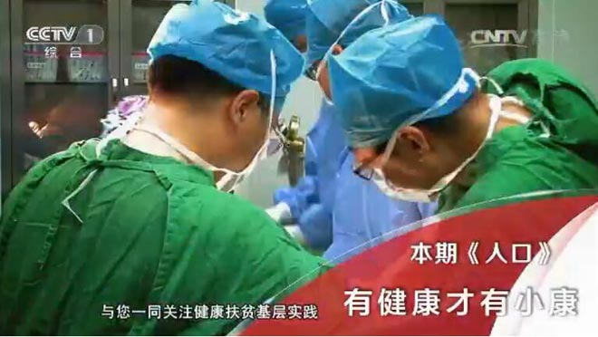
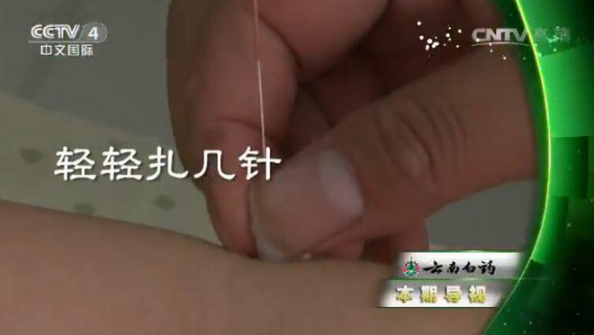

-
《健康之路》明辨肠癌巧应对（下）
肠癌容易被误诊。专家提示：不明原因的贫血需警惕肠癌，严重便秘易与肠癌混淆。
-
专家：“药驾”比“酒驾”更危险
在“开车不喝酒，喝酒不开车”观念深入人心的今天，许多人对于危害不亚于酒驾的“药驾”并不了解。
-
老年人运动 这些致命风险你要知
长跑、马拉松等并不适合，小心诱发心脑血管意外，最适宜的运动是慢跑、快走、游泳、打乒乓球等。
-

《人口》有健康才有小康
栏目组来到了黄冈市的红安县，这里是国家扶贫开发工作的重点县。短短三年，11万贫困人口中已有6万人实现脱贫，现如今，百姓的医疗卫生现状如何呢？
-
孕期缺维生素B12 小孩糖尿病风险高
女性怀孕时若缺乏维生素B12，后代可能易患2型糖尿病等代谢性疾病。
-

《中华医药》健康故事：问心要健康
拔火罐是中医比较常见的治疗手段，驱寒，祛湿，去火都可用拔罐来进行调理。
健康要闻
-
组织抽检蔬菜制品、饼干、茶叶及相关制品、薯类和膨化食品、食糖等5类食品331批次样品。
-
解读大健康行业，传播最新行业报道，为您带来最新鲜、最有营养的健康行业新闻。
- 知名餐厅牛排含有“鸭成分”？
- “医信付”实施一个月，患者买账吗？
- 多数儿童白血病起源出生前
- 水痘流行季，如何预防和护理？
- 知名餐厅牛排含有“鸭成分”？
- 水痘流行季，如何预防和护理？
- 知名餐厅牛排含有“鸭成分”？
医院那些事
-
２０１６年２月２５日郑州市人民政府关于印发２０１６年郑州市民生“十件实事”的通知，包括扩大免费救治范
-
她有一双快手，号称“刘氏速度；她有一颗匠心，在缔造完美的道路上开创了无数个眼科界第一；她从医36载，开
-
11月25日下午，郑大三附院在睿智楼二楼会议室举行张凯医生关爱贫困患儿捐赠仪式。院领导张小安、周荣群、王
-
10月8日一大早，国庆长假第一个工作日，郑州市妇幼保健院党委部署开展了2016年“慈善日·郑州在行动”主题捐
-
2016年10月9日上午, 郑州市卫计委妇幼健康服务处组织省市专家对郑州大学附属郑州中心医院危重孕产妇救治中心
-
在郑州老百姓的心中，要看心血管疾病，必到市七院；要看心血管内科，必找市七院掌门人——心血管内科主任
健康指南
- 水痘高发季疾控专家支招水痘防控—滚蛋吧水
- 产科专家建议准备要二孩 至少查查血压、血糖
- 《中国的中医药》白皮书：中医药发展上升为
- 云南省食药监局抽检显示：达利园法式软面包
- 久咳不愈 试试天冬食疗专家提醒：不是所有的
- 孩子之间闹矛盾——做暖心爸妈 先关注孩子感
- 女性慢阻肺发病率上升要避开二手烟、厨房油
- 与阿尔茨海默病不同 血管性痴呆多发生在卒中
- 老人被蟹钳手 三天之后身亡被海鲜刺伤 尽快
- 天冷适合吃辣？错！北方干，火锅最好吃清汤
- 油多、调味料多、添加剂多仿荤素菜 过度加工背离健康...
- 88岁老太熟背圆周率 防痴呆你还有这些可以做
- 13支队伍“华山论剑”“省现代杯”广场舞大赛圆满落幕
- 北京市食药监局：超市活鱼下架并非因为水污染
- 久咳不愈 试试天冬食疗专家提醒：不是所有的